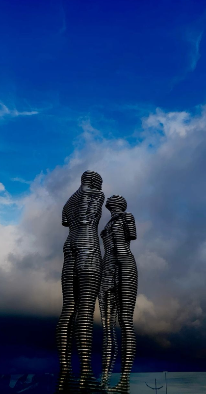

„ალი და ნინო“ - ს ქანდაკება - მოძრავი სკულპტურული კომპოზიცია
ბათუმის ბულვარში, საქართველოს შავიზღვის კურორტის ერთ-ერთი ღირსშესანიშნაობაა.
8 მეტრი სიმაღლის ქალისა და კაცის, ალისა და ნინოს „ჰაეროვანი“ გამჭვირვალე ლითონისაგან
დამზადებული ფიგურები, ნელნელა მოძრაობენ ერთმანეთის შესახვედრად, თანდათანობით კი ერთ
მთლიანობად იქცევიან. ეს პროცესი ყოველ 10 წუთში მეორდება.
ქანდაკება ცნობილი ქართველი მხატვრისა და მოქანდაკის თამარ კვესიტაძის საავტორო ნამუშევარია.
ძეგლი ცნობილი აზერბაიჯანელი მწერლის ყურბან საიდის რომან "ალი და ნინოს" სახელს ატარებს.
რომანი „ალი და ნინო“, მოგვითხრობს აზერბაიჯანელი მუსულმანის ალი შირვაშირისა და ქართველი
ქრისტიანის ნინო ყიფიანის სიყვარულზე. წიგნში მოთხრობილი მოვლენები ვითარდება კავკასიაში პირველი
მსოფლიო ომის დროს.
„ალი და ნინო“ - ს ქანდაკება შეიქმნა 2010 წელს და იგი წარმოადგენს სიყვარულის სიმბოლოს, მიუხედავად
ეროვნებისა თუ სარწმუნოებისა.
ქანდაკება “პანორამული ბორბალის” მიმდებარე ტერიტორიაზე, 50 მეტრშია განთავსებული.
